Sanskrit as a Foreign Language (SAFL), Samskrita Bharati – Third Year
AP college-level curriculum and rigor in classical Sanskrit grammar, composition, and recitation.
Portfolio
A short introduction — a sentence or two on who you are, what you study, and the thread that runs through your work.
High school student with a consistent record of academic honors and a growing technical focus in artificial intelligence and computational linguistics. Selected in the top 100 by America's Startup Investor Council for equity investment. Certified in prompt engineering through Vanderbilt University's professional certificate program, and currently in the second year of a three-year college-rigor Sanskrit program (SAFL). Combines hands-on web development experience with five years of formal Indian classical vocal training and an international performance record.
Career interest Linguistic AI and AI sciences — specifically the intersection of natural language, computational modeling, and how humans and machines learn language.
Class of 2029, a sophomore at Monroe Township High School, NJ; Honor Roll and Principal's List recipient throughout academic career.
Distinctions Won first place in Technology Student Association for Biotechnology.
Class of 2029
One or two lines on what this covered and what set it apart.
Class of 2029
AP college-level curriculum and rigor in classical Sanskrit grammar, composition, and recitation.
100+ documented volunteer hours.
Indian Classical Vocal Music — 7 years of formal training.
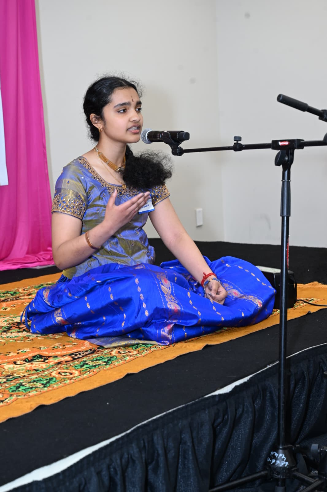
Gallery of my art pieces that have been displayed at the Monroe Township Public Library, and won prizes.
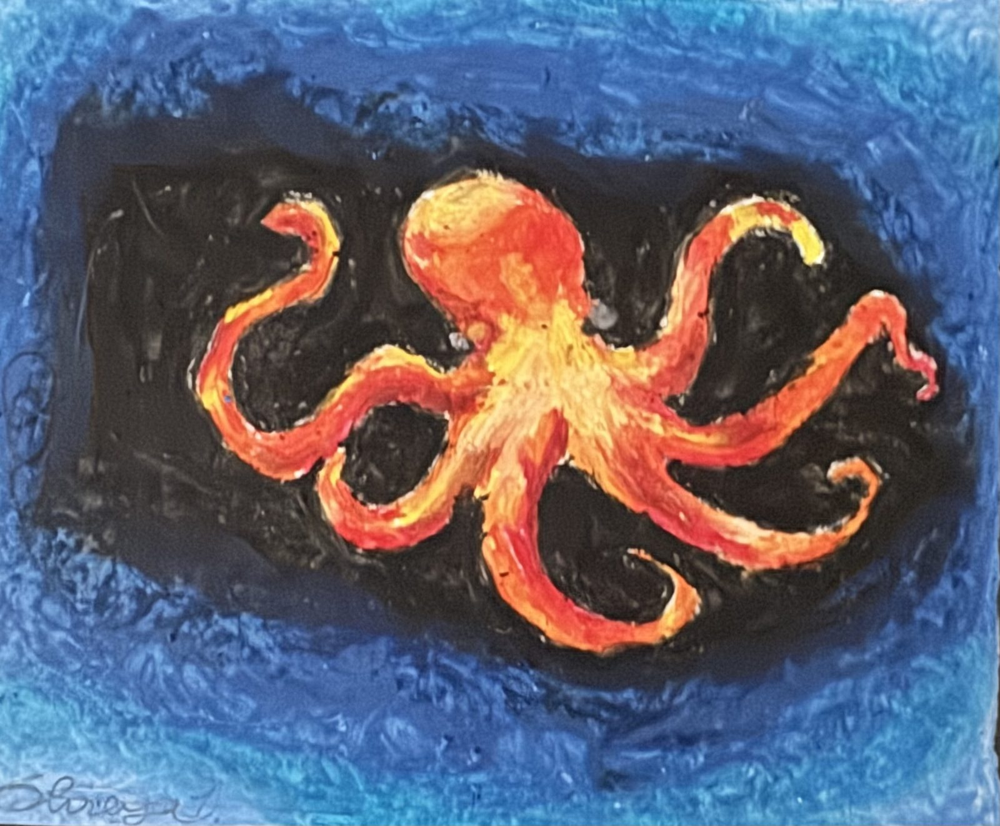
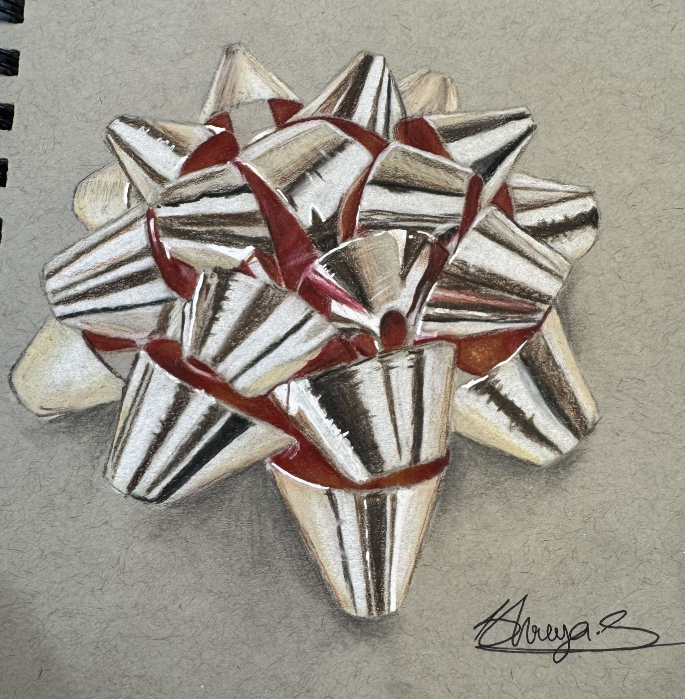
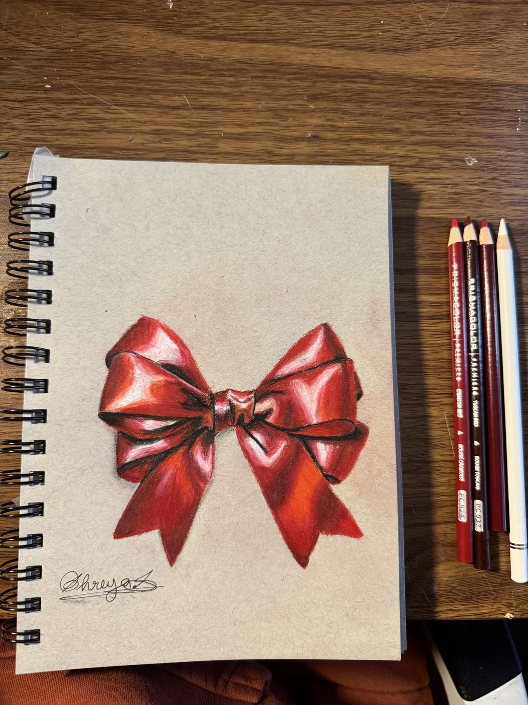
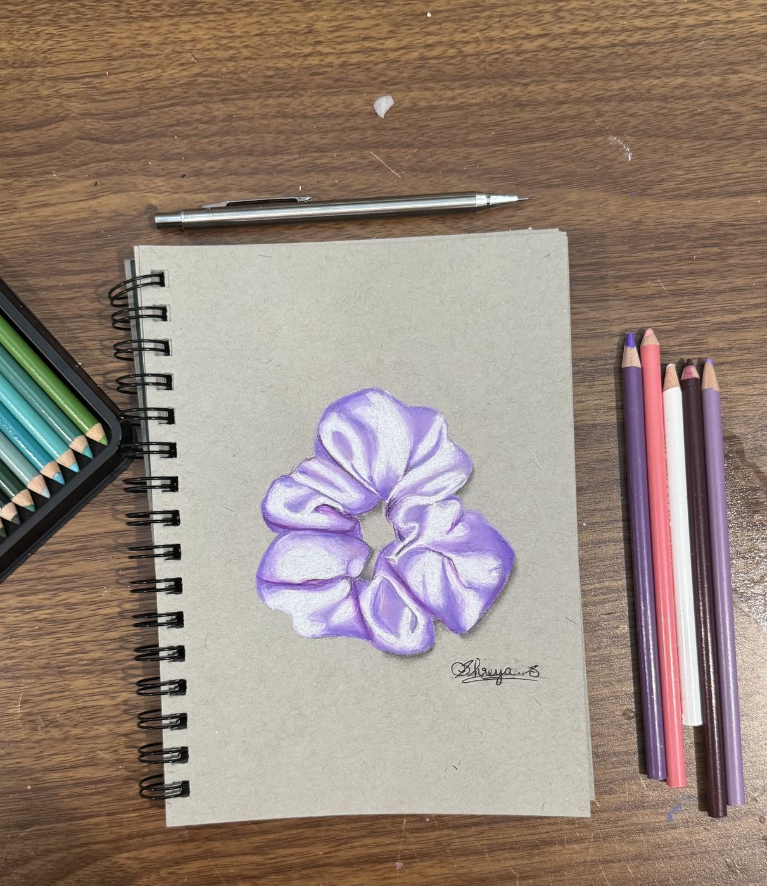
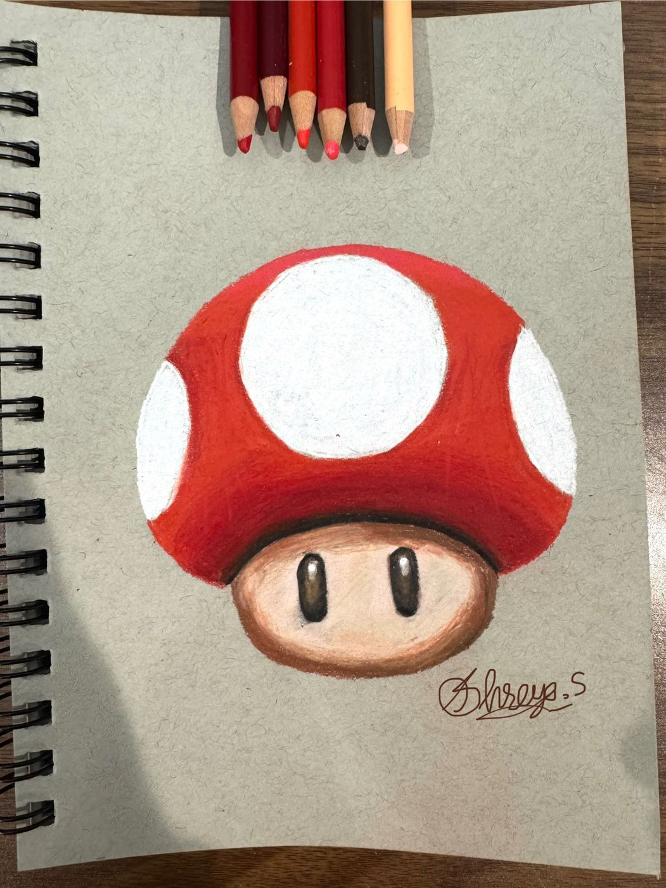
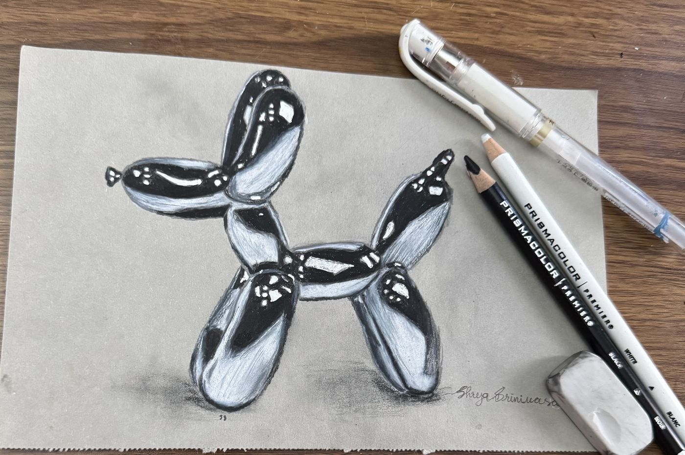
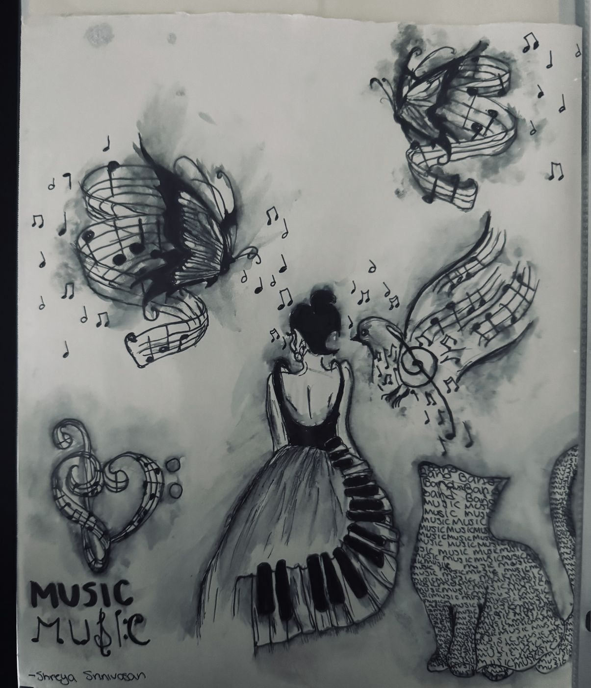
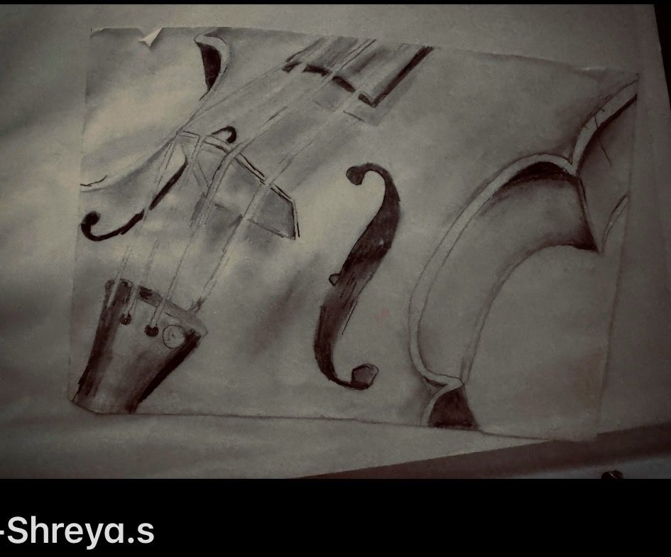
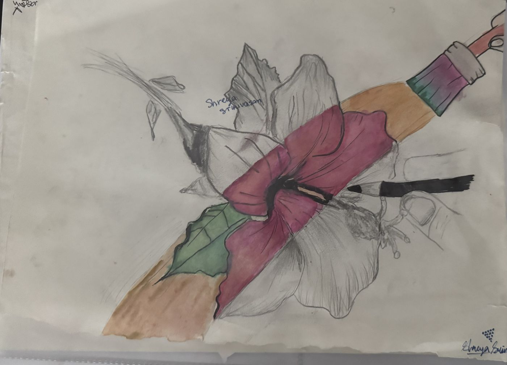
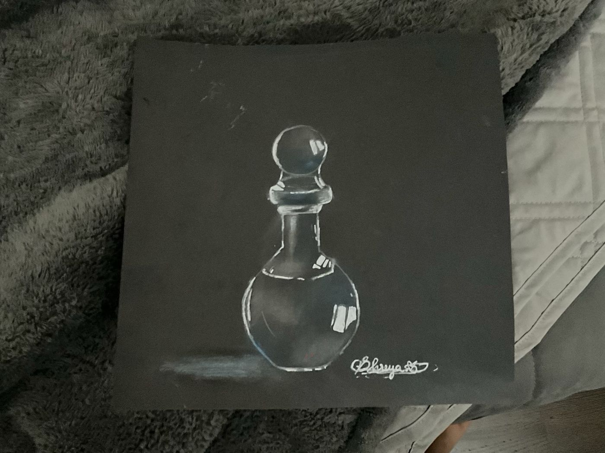
Recognitions across competition, performance and sport.
Institutions founded Sai Kalpataru Vidyalaya, New Jersey — a charitable Samskriti school imparting śloka recitation, Sanskrit, and Indian cultural and spiritual education to children and adults in the New Jersey community.
At Om Sri Sai Balaji Temple and Cultural Center, 285 Rhode Hall Rd, Monroe Township, NJ 08831.